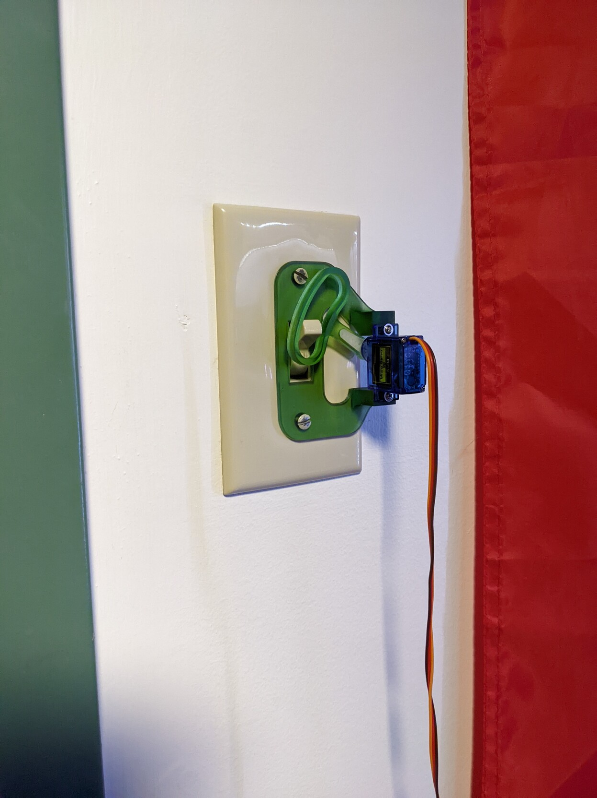

Automatic Lightswitch
Stats -> The average person can read this 415 word page in 2 minutes.
Servo + Arduino + 3d Printer = Magic
I found an 3d print file (stl) for a project I have wanted internally for a while now.
I have and will consistently forget to go to bed. It’s a problem. My thinking is that if the lights in the room turned off on their own after a certain time, I would notice and choose to wrap things up for the night.
This is the plan in my head:
- Buy Arduino + servo
- Find / model a 3d print to attach the servo to the lightswitch.
- Code up the Arduino to flick the switch every 12 hours or so.
Problems
- The seeeduino I chose doesn’t exactly specify how to get 5v output, so I purchased a 5v power supply+breadboard setup thinking this would fix my problems. The servo needed a 5v power source, but apparently (in this case) it has to be the same supply as the arduino in order to function. The solution for this was to find the vin / vout solder points on the back of the board and solder the servo wires straight to there.
- Finding a model was difficult because I guess very few people on thingiverse are interested in Arduino powered light switches. Ultimately, I found exactly what I was looking for by browsing in the related section of an unrelated thingiverse entry. Original file found here.
- The last problem to tackle was the Arduino code, here’s how I tackled this problem:
- Import the servo library
- create a delay, range and offset variable
- tweak the angle range and angle offset to properly flick the switch in a non-violent manner.
- Also realize that the Arduino should put the servo arm back in-between on/off to allow the lights to be flicked by non-robot beings.
- Now added a duration for how long to attempt to flick the switch before returning to neutral position
- realize now that I’ve programmed a day to equal 24 hours and 6 seconds.
- Subtract wait time between flicks by flick attempt duration to attempt to ensure 24 hour flick cycle.

And there you have it, a working Arduino powerd lightswitch that people can also interact with.